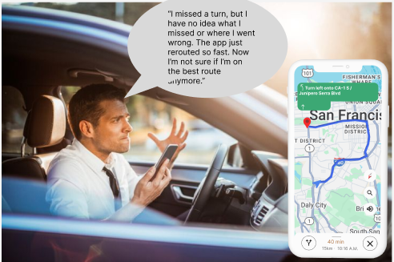

Design Process
1. Information Architecture
Adding extra feature when u missed a turn maintain present user flow
2. Wireframing
Created low-fidelity prototypes to test the new flow before visual design.

3. UI Design
Developed high-fidelity mockups with the new visual language.
Before
After
High-Fidelity
Stage 1
Adding extra feature when u missed a turn maintain present user flow

Stage 2
Created low-fidelity prototypes to test the new flow before visual design.

Design Explanation
Stage 1
Adding extra feature when u missed a turn maintain present user flow

User Testing
Usability Testing
Usability Testing Conducted moderated sessions with 8 participants to evaluate the effectiveness of the new missed-turn recovery flow. 92% Success Rate in completing navigation correction tasks ⏱ 28s Average Time Reduction in route recovery compared to the old flow Users reported improved clarity, control, and reduced confusion when a turn was missed
A/B Testing
Ran a 2-week live test with 10,000 users, comparing the old automatic rerouting experience with the new interactive recovery design. +32% Increase in successful reroutes using the “Go-Back / Continue” choice -41% Reduction in drop-off rate after a missed turn Higher engagement and satisfaction, especially on unfamiliar routes
Results & Impact
Key Learnings
1.Giving users control over rerouting increases trust and reduces reliance on voice instructions
2.Highlighting missed routes visually (in red) helps users understand and learn from errors
3.Offering a clear binary choice (Go Back / Continue) reduces decision fatigue and supports faster re-engagement